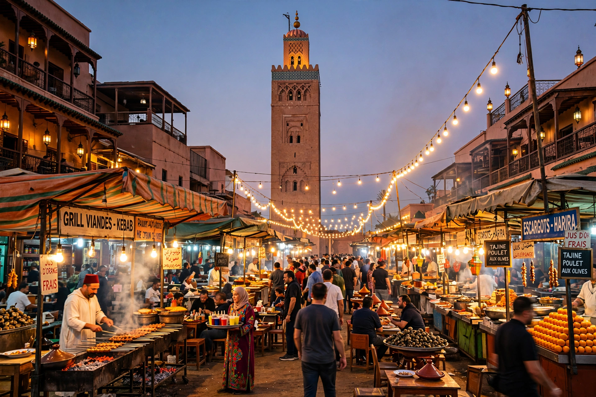

| Marrakesh | |
|---|---|
| Country | Morocco |
| Founded | 1070, by Abu Bakr ibn Umar |
| Population | Over 1 million (metropolitan area larger) |
| Nickname | The Red City; the Ochre City |

Marrakesh (Arabic: مراكش, Marrākush) is the fourth-largest city in Morocco and the capital of the Marrakesh-Safi region. Founded around 1070 by the Almoravid emir Abu Bakr ibn Umar, it served as an imperial capital under the Almoravid, Almohad and Saadian dynasties. It is known as the "Red City" or "Ochre City" for the red sandstone of its walls and buildings, and is one of Morocco's four imperial cities, alongside Fez, Meknes and Rabat.
The city grew rapidly as the Almoravid capital, acquiring the Koubba el Baadiyn and the first Koutoubia Mosque. The Almohads took the city in 1147 and rebuilt much of it, raising the present Koutoubia minaret and the Kasbah. After a period of decline when Fez became the principal capital, the Saadians made Marrakesh their capital again in the 16th century, building the Saadian Tombs and the El Badi Palace with the wealth of the sugar and trans-Saharan trades. In the 20th century the French Protectorate built the modern Ville Nouvelle (Guéliz) outside the old walls.
The medina, a UNESCO World Heritage Site since 1985, centres on Jemaa el-Fnaa, a vast square of food stalls, storytellers, musicians and snake charmers whose cultural traditions UNESCO also recognises. Other landmarks include the Bahia Palace, the Ben Youssef Madrasa, the Majorelle Garden, and the souks for which the city is famous. Marrakesh is a major tourist destination and a gateway to the High Atlas Mountains.
See also: Almohad Caliphate · Kumbi Saleh